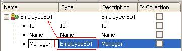
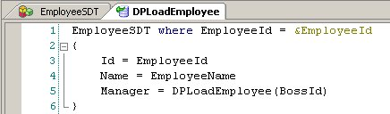
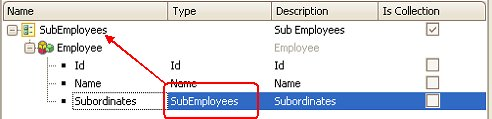

Data Providers can fill recursive structures, either directly or through recursive calls.
Employee
{
EmployeeId*
EmployeeName
BossId subtype of EmployeeId
BossName subtype of EmployeeName
}
Example 1Suppose it is necessary to load an employee's information into a structure (for example to send it as a parameter to another object). First, the SDT should be defined as follows:  Note that this is a Recursive SDT. Then, a Data Provider receiving the employee will solve the problem:  Where: Output: EmployeeSDT Collection: False Parm( &EmployeeId ); This is a recursive Data Provider. DPLoadEmployee is calling itself to fill the recursive member of the EmployeeSDT. For example, the XML output (DPLoadEmployee( 123 ).toXML()) would be:
<EmployeeSDT>
<Id>123</Id>
<Name>John Doe</Name>
<Manager>
<Id>99</Id>
<Name>Mary Shelley</Name>
<Manager>
<Id>69</Id>
<Name>Ernest Jackson</Name>
<Manager></Manager>
</Manager>
</Manager>
<EmployeeSDT>
Example 2Now suppose that given an employee, you have to Output all his/her subordinates (direct or indirect), as shown below:
<SubEmployees>
<Employee>
<Id>99</Id>
<Name>Mary Shelley</Name>
<Subordinates>
<Employee>
<Id>123</Id>
<Name>John Doe</Name>
<Subordinates>
...
</Subordinates>
</Employee>
<Employee>
<Id>150</Id>
<Name>Camile Green</Name>
<Subordinates>
...
</Subordinates>
</Employee>
...
</Subordinates>
</Employee>
<Employee>
...
</Employee>
...
</SubEmployees>
This can be easily done with a Data Provider. First, it is necessary to define the Output structure (this is done using an SDT):  Second, the Data Provider itself is:
Name: DPLoadSubordinates
Output: SubEmployees
Rules: parm(&BossId)
SubEmployees
{
Employee
{
Id = EmployeeId
Name = EmployeeName
Subordinates = DPLoadSubordintates( EmployeeId )
}
}
Note that this is a recursive Data Provider (DPLoadSubordinates is calling itself).
|
| Backlinks | ||
| Category:Data Provider object | Data Provider Subgroup statement | Data Provider: Input |
| Toc:GeneXus - Table of contents | Recursive SDTs | Treeview Control |